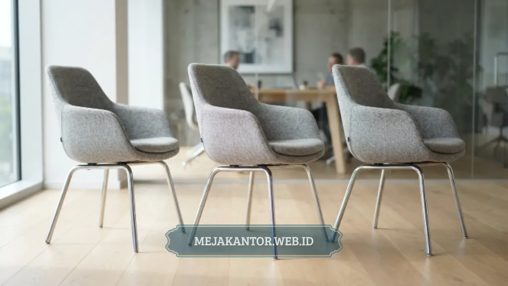

Kursi rapat ergonomis adalah kursi yang dirancang mengikuti bentuk tulang belakang manusia dengan sandaran, dudukan, dan mekanisme putar yang mendukung postur duduk sehat selama sesi rapat berlangsung.
Kursi jenis ini penting untuk ruang rapat minimalis karena rapat kerja sering berlangsung lebih dari satu jam dan menuntut konsentrasi tinggi dari seluruh anggota tim yang terlibat.
- Kursi ergonomis memiliki sandaran punggung yang mengikuti lekuk tulang belakang.
- Ketinggian kursi idealnya dapat disesuaikan agar sejajar dengan tinggi meja rapat.
- Material kain breathable lebih nyaman dibanding kulit sintetis untuk rapat panjang.
- Mekanisme putar dan roda memudahkan pergerakan tanpa mengganggu peserta lain.
- Kenyamanan kursi berpengaruh langsung pada fokus dan produktivitas peserta rapat.
Daftar Isi Artikel
- Apa yang Membuat Kursi Rapat Disebut Ergonomis?
- Bagaimana Postur Duduk Memengaruhi Kenyamanan Rapat?
- Mengapa Kenyamanan Kursi Memengaruhi Hasil Rapat?
- Berapa Lama Kursi Rapat Standar Nyaman Digunakan?
- Material Apa yang Paling Nyaman untuk Kursi Rapat?
- Apakah Warna Kursi Memengaruhi Kesan Ruang Rapat?
- Bagaimana Merawat Kursi Rapat agar Tetap Awet?
- Kapan Sebaiknya Kursi Rapat Diganti?
- Apakah Kursi Rapat Perlu Fitur Roda dan Mekanisme Putar?
Apa yang Membuat Kursi Rapat Disebut Ergonomis?
Kursi rapat disebut ergonomis apabila memiliki sandaran punggung yang menopang lekuk tulang belakang, dudukan dengan busa berkualitas, serta pengaturan ketinggian yang dapat disesuaikan dengan postur pengguna.
Selain aspek fisik, kursi ergonomis idealnya juga memiliki sandaran tangan pada ketinggian yang tepat agar bahu tidak tegang saat menulis atau mengetik selama rapat berlangsung.
Mekanisme putar dan roda pada kaki kursi turut mendukung mobilitas peserta tanpa harus menggeser seluruh kursi setiap kali berpindah posisi, menjaga keheningan ruang diskusi.
Bagaimana Postur Duduk Memengaruhi Kenyamanan Rapat?
Postur duduk yang tidak tepat selama rapat dapat menyebabkan ketegangan pada punggung dan leher, terutama pada sesi diskusi yang berlangsung lebih dari satu jam tanpa jeda istirahat.
Kursi dengan sandaran rendah atau tanpa penyangga pinggang cenderung memaksa peserta membungkuk seiring waktu, sehingga mengurangi fokus dan meningkatkan rasa lelah sebelum rapat selesai.
Mengapa Kenyamanan Kursi Memengaruhi Hasil Rapat?
Kenyamanan kursi memengaruhi hasil rapat karena peserta yang merasa nyaman secara fisik cenderung lebih mudah berkonsentrasi pada materi diskusi dibanding peserta yang harus menahan pegal pada punggung atau bahu.
Kondisi fisik yang prima selama berdiskusi meningkatkan partisipasi aktif peserta dalam merumuskan strategi atau memecahkan permasalahan tim secara konstruktif.
Oleh karena itu, investasi pada kursi rapat berkualitas sering dianggap sebanding dengan peningkatan efektivitas rapat itu sendiri dalam jangka panjang.

Berapa Lama Kursi Rapat Standar Nyaman Digunakan?
Kursi rapat standar dengan busa dudukan yang memadai umumnya tetap nyaman digunakan untuk sesi rapat hingga satu hingga dua jam sebelum peserta mulai membutuhkan perubahan posisi duduk.
Untuk ruang rapat yang sering digunakan dalam sesi lebih panjang, kursi dengan fitur penyesuaian ketinggian sandaran dan sandaran tangan yang dapat diatur menjadi pilihan yang lebih tepat dibanding kursi rapat sederhana tanpa fitur tambahan.
Material Apa yang Paling Nyaman untuk Kursi Rapat?
Material yang paling nyaman untuk kursi rapat pada iklim tropis umumnya adalah kain breathable dengan pori-pori yang memungkinkan sirkulasi udara lebih baik dibanding kulit sintetis.
Kulit sintetis memang memberi kesan mewah dan mudah dibersihkan, namun cenderung terasa panas apabila digunakan dalam ruangan tanpa pendingin udara optimal dalam durasi rapat yang lama.
Sebagai alternatif, kain berbahan mesh pada bagian sandaran punggung semakin populer karena memberikan ventilasi lebih baik sekaligus tetap terlihat rapi untuk ruang rapat kantor modern.
Apakah Warna Kursi Memengaruhi Kesan Ruang Rapat?
Warna kursi turut memengaruhi kesan ruang rapat, dengan warna netral seperti hitam, abu-abu, dan navy paling sering dipilih karena mudah dipadukan dengan berbagai warna meja dan dinding.
Warna gelap pada kursi juga cenderung lebih tahan terhadap noda ringan dibanding warna terang, sehingga lebih praktis untuk ruang rapat dengan frekuensi penggunaan tinggi setiap hari kerja.
Bagaimana Merawat Kursi Rapat agar Tetap Awet?
Kursi rapat dapat tetap awet dengan perawatan rutin berupa pembersihan permukaan sesuai jenis material, pengecekan mekanisme putar dan roda secara berkala, serta menghindari beban berlebih di luar kapasitas yang disarankan.
Untuk kursi berbahan kain, pembersihan dengan vacuum ringan secara berkala membantu mencegah penumpukan debu yang dapat merusak serat kain dalam jangka panjang.
Sementara untuk kursi berbahan kulit sintetis, penggunaan kain lembap tanpa bahan kimia keras lebih disarankan agar permukaan tidak mudah retak atau mengelupas.
Mekanisme putar dan roda pada kaki kursi juga perlu diperiksa secara berkala untuk memastikan pergerakan tetap lancar dan tidak menimbulkan bunyi berdecit yang mengganggu selama rapat berlangsung.
Kapan Sebaiknya Kursi Rapat Diganti?
Kursi rapat sebaiknya diganti apabila busa dudukan sudah kempis, sandaran punggung mulai retak, atau mekanisme penyesuaian ketinggian tidak lagi berfungsi dengan baik meski sudah diperbaiki.
Tanda-tanda tersebut umumnya muncul setelah pemakaian intensif selama beberapa tahun. Mengganti kursi pada waktu yang tepat membantu menjaga kenyamanan serta kesan profesional ruang rapat tetap terjaga.
Apakah Kursi Rapat Perlu Fitur Roda dan Mekanisme Putar?
Fitur roda dan mekanisme putar pada kursi rapat cukup penting untuk ruang rapat yang sering menggunakan perangkat presentasi, karena peserta dapat berputar menghadap layar tanpa harus mengangkat atau menggeser kursi.
Namun, untuk ruang rapat yang memiliki lantai berkarpet tebal, roda dengan material yang sesuai perlu dipilih agar pergerakan tetap lancar dan tidak merusak permukaan karpet dalam pemakaian jangka panjang.
Kursi rapat ergonomis bukan sekadar elemen pelengkap, melainkan faktor penting yang menentukan kenyamanan dan fokus peserta selama sesi diskusi berlangsung. Memilih kursi dengan sandaran tepat, material breathable, dan fitur penyesuaian ketinggian dapat meningkatkan kualitas rapat secara keseluruhan.
Lengkapi ruang rapat kantor Anda dengan kursi ergonomis berkualitas dari mejakantor.web.id, tersedia dalam berbagai desain minimalis yang sesuai dengan kebutuhan ruang rapat modern.

Mega Anggun (Ega)
Penulis Konten & Spesialis Penataan Interior Kantor. Berpengalaman dalam memberikan tips ergonomi dan memilih furnitur terbaik untuk menunjang produktivitas kerja.